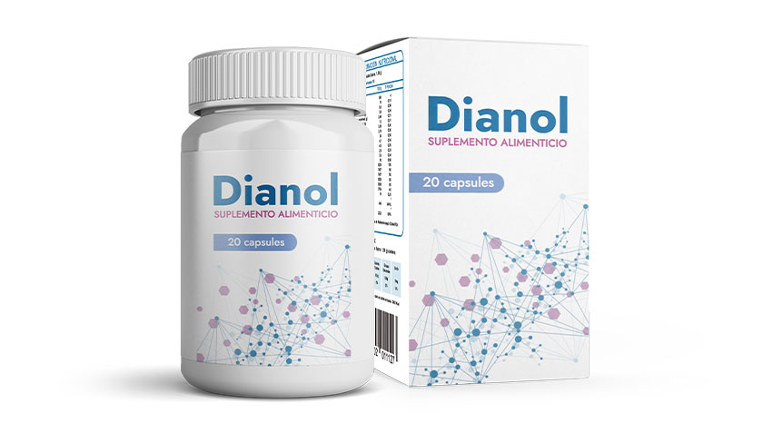

Existe un tratamiento efectivo para la diabetes mellitus: ¿por qué los médicos no lo dicen?
Algo increíble ocurrió en el congreso anual de endocrinólogos. Un joven científico prometedor ha presentado un método para deshacerse de la diabetes. Ya no se necesitan inyecciones constantes de insulina. No habrá necesidad de controlar los niveles de azúcar y seguir una dieta estricta. Los investigadores experimentados recibieron el informe del joven colega con una gran ovación. Pero desafortunadamente, este descubrimiento extremadamente importante no ha sido cubierto por la prensa. Una solución conveniente y simple al problema resultó ser demasiado desventajosa para las compañías farmacéuticas. Sin embargo, el joven genio no va a rendirse. Está decidido a hacer que el medicamento único esté disponible para todos.
Lo que fue su empujón para iniciar la investigación
Sé de primera mano sobre la diabetes. Cuando era pequeño, esta enfermedad literalmente "se comió" a mi abuela. Ni el tratamiento prescrito por los médicos ni la dieta ayudaron. Ella cumplió estrictamente con todas las prescripciones médicas, no se permitió nada superfluo. Pero debido a la diabetes, la función renal se vio afectada. El sistema vascular también sufrió. Y como resultado, mi abuela murió a la edad de 58 años a causa de enfermedades provocadas por la diabetes.
Al año, mi madre fue diagnosticada con el mismo problema. Para entonces, ya me había dado cuenta de que el régimen de tratamiento clásico no estaba ayudando. Pero no podía ver tranquilo cómo se destruía el cuerpo de una persona querida para mí.
Pasé varios años investigando el problema y buscando tratamientos efectivos. Durante este tiempo mi madre comenzó a tener graves problemas de visión. Es una patología frecuente en la diabetes. A menudo, los pacientes pierden completamente la visión o se reduce a indicadores críticos.
El primer objetivo era crear un remedio capaz de frenar o detener el curso de la enfermedad. Durante el desarrollo de la fórmula, tuvimos que tener en cuenta que en la diabetes hay muchas contraindicaciones. Los componentes químicos utilizados en las preparaciones clásicas dan complicaciones a los riñones y el hígado. Pero son estos órganos los que también afectan a la enfermedad.
Tuve que buscar soluciones que no dañaran el ya debilitado cuerpo del diabético. Y al mismo tiempo serían bastante efectivos.
El resultado de mi trabajo fue la invención de un remedio fundamentalmente nuevo, capaz no solo de frenar el desarrollo de la diabetes, sino de detener completamente su efecto negativo en los órganos y sistemas.

Qué forma parte del
La composición de incluye:
- Calcio carbonato. Compensa la falta de calcio en el cuerpo, que es especialmente importante para los diabéticos.
- Maqui. El polvo liofilizado de las bayas de Amapola detiene los procesos destructivos en los tejidos, inicia la regeneración mejorada.
- Aloe vera. Componente multifuncional inigualable. Normaliza el azúcar en la sangre, alivia los procesos inflamatorios.
- Arándano. Previene el desarrollo de complicaciones en la diabetes mellitus. Normaliza la digestión y el sistema genitourinario. También inhibe el deterioro de la visión.
- Fenogreco. Fortalece el sistema inmunológico y circulatorio.
- Linaza. Elimina la hinchazón y los procesos estancados. Proporciona un flujo normal de sangre y linfa.
- Vitamina B1. Normaliza los procesos metabólicos.
- Cromo. Aumenta la acción de la insulina producida por el cuerpo. Inhibe el desarrollo de neuropatía periférica.
Qué tan efectivo y seguro ese nuevo medicamento
El nuevo remedio recibió el nombre de trabajo . Por el momento, no hay análogos. Junto con el centro de investigación, realizamos ensayos con voluntarios. Los resultados sorprendieron a todos.
mostró una excelente eficiencia. El grupo incluyó 147 voluntarios con diabetes mellitus. Entre ellos se encontraban pacientes jóvenes y ancianos. 145 sujetos normalizaron sus niveles de azúcar en la sangre. Al mismo tiempo, no tomaron ningún medicamento adicional. La dieta también fue abandonada gradualmente.
Además del efecto del medicamento directamente sobre la diabetes mellitus, notamos una dinámica positiva en las complicaciones de la enfermedad subyacente. En los pacientes, la presión se normalizó, la hipertensión desapareció, los vasos se fortalecieron y la regeneración normal del cuerpo regresó.
Dos voluntarios tuvieron cambios irreversibles en los riñones y el sistema cardiovascular. En esta variante, hubo mejoras significativas en la condición, pero las patologías ya desarrolladas no pudieron superarse. Sin embargo, el uso de les dio la oportunidad de volver a una vida plena con pocas restricciones alimentarias.
El principal descubrimiento que hicimos en la fase de investigación de los efectos secundarios del medicamento. Al final resultó que, la composición es tan única que no tiene un efecto negativo en el cuerpo del paciente. Los componentes totalmente naturales no causan absolutamente ningún efecto secundario. puede ser utilizado por cualquier paciente, incluso sin supervisión médica.
¿Cuál es el destino futuro del remedio
Inmediatamente después del final de la investigación y sustentar la tesis, la información sobre la aparición de un remedio fundamentalmente nuevo se filtró a las grandes compañías farmacéuticas. Tal evento no podría pasar desapercibido.
Literalmente, ahí mismo, los representantes de las empresas comenzaron a ponerse en contacto conmigo. La esencia de las negociaciones era simple: vender la fórmula. No voy a comentar las cantidades que me ofrecieron, pero eran impresionantes.
Cada uno de los solicitantes se dio cuenta de que tal remedio podría venderse muy caro. Y la compañía que lanzara el medicamento primero se enriquecería. Pero no estaba absolutamente satisfecho con esta opción de desarrollo de eventos.
Al vender la fórmula, privaría a la mayoría de las personas de la oportunidad de deshacerse de la diabetes. El costo del producto en las farmacias sería inaceptable para muchos residentes de nuestro país. Y en mis planes, no estaba incluida esta situación.
Logré lo que quería y, sin embargo, salvé a mi madre de una enfermedad peligrosa. Por lo tanto, ahora creo que no tengo derecho a privar a otras personas de la oportunidad de curar la diabetes mellitus en ellos y en sus seres queridos.

Al mismo tiempo, los ataques de las compañías farmacéuticas no se detuvieron por un segundo. En los primeros meses cambié algunos teléfonos, dejé de usar las redes sociales. Solo así pude descansar un poco de la presión constante.
Hoy en día se produce en pequeñas cantidades un centro de investigación. Esto nos permite implementarlo a un precio razonable. Desafortunadamente, la capacidad de producción no siempre es suficiente para cerrar las necesidades de los residentes de nuestro país. Pero tratamos de aumentar la producción siempre que sea posible.
Dónde comprar
El remedio se puede comprar solo en el sitio web oficial. En general, no va a la venta. Pero con esta opción no siempre es posible satisfacer todas las solicitudes. Hasta la fecha, hay una cantidad suficiente del remedio en stock. Sin embargo, mañana podría no estar disponible.
Tan solo en el último mes hemos recibido más de 1000 solicitudes para . Como tuvimos problemas de capacidad, lanzamos una segunda línea de producción. Ahora se puede pedir el original sin recargos e incluso con un 50% de descuento.
Tengan cuidado. No se arriesguen al ordenar el remedeio a través de terceros. En el mejor de los casos, estos serán sitios de revendedores que implementan con grandes porcentajes de ganancias. En el peor de los casos, puede encontrarse con estafadores que venden un medicamento falso.
Ordene en el sitio web oficial ahora, mientras esté disponible.